Click HERE to download chapter instruments.
Digital waveguide modeling has become one of the most active areas of research in sound synthesis in recent years. It is based on the solution of the wave equation, a differential equation which describes the behavior of a wave in a medium.
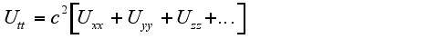 (19.1)
Where
U is the wave function,
c is the speed of propagation of the wave in the medium,
Uii is the second derivative of the wave function with respect to i.
Boundary values and initial conditions are usually specified as well. Plucked string instruments and many wind instruments can be approximated by the one dimensional wave equation. For wind instruments breath pressure is usually given as an input to the system. A drum membrane can be approximated by the two dimensional wave equation. Solving the wave equation mathematically is often difficult, and solving the wave equation numerically is computationally intensive.
Digital waveguides provide a computationally efficient method of expressing the wave equation. For a general one dimensional case a bidirectional delay line is used to simulate samples of a traveling wave and its reflection. A more complex system may have a bidirectional delay line for each separately vibrating section.
It should also be noted that commercial implementation of instruments in this section may be subject to certain Stanford University and other patents.
This instrument is derived from the Karplus-Strong algorithm, one of the most easily implemented waveguide models. It is accomplished as follows: Fill a delay line with random numbers, take the average of the current output and the previous output, and add this average to the input of the delay line. This simple procedure produces sounds remarkably like a plucked string.
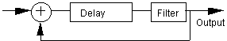
Figure 19.1 A block diagram for the Karplus-Strong Algorithm.
The initial noise in the delay line is representative of a string in a high energy state. The average is a type of digital filter. It represents damping which occurs at the ends of the string. This simple delay line, filter, feedback sequence is typical of waveguide instruments.
At low frequencies the initial noise begins to dominate the sound in the Karplus-Strong algorithm. To eliminate this problem and more closely simulate a plucked string's initial state, a filtered triangle waveform was selected as an initial state of the delay line.
| iplk | = | 1/ifqc * | p6 |
| kenvstr | linseg | 0, | ipluck/4, p4/2, ipluck/2, p4/2, ipluck/4, ipluck/4, 0, p3-ipluck, 0 |
| aenvstr | = | kenvstr | |
| ainput | tone | aenvstr, | 200 |
The duration of the initial pulse, parameter p6, can give the effect of different plucking styles.
Filters and initial conditions can introduce an offset from zero. When these are fed back into the system they can rapidly produce offscale values. To solve this problem a special type of filter called a DC blocker is introduced.
| ablkin | init | 0 |
| ablkout | init | 0 |
| ablkout | = | afeedbk-ablkin+.99*ablkout |
| ablkin | = | afeedbk |
| ablock | = | ablkout |
The sum of the input and the DC blocked feedback is fed into a delay line of length 1/frequency. This instrument is slightly flat due to the delays introduced by the filters. Subtracting about 15 samples brings it into tune.
| adline | delay | ablock+ainput, | 1/ifqc-15/sr |
| afeedbk | tone | adline, 400 |
Some resonances are generated and scaled to simulate the resonance of an acoustic bass body.
| abody1 | reson | afeedbk, 110 | 40 |
| abody1 | = | abody1/5000 | |
| abody2 | reson | afeedbk, 70 | 20 |
| abody2 | = | abody2/50000 |
These are modified by an envelope to produce a swell shortly after the initial pluck. This is added to the output from the delay line, scaled again and used as the output from the instrument.
| out | 50*koutenv*(afeedbk+kfltenv*(abody1+abody2)) |
This instrument could be enhanced by introducing a bridge delay line for transmitting the string vibrations to the body or modifying the string filter for fingered and open strings. Perhaps a system of waveguides could be set up to simulate the acoustic bass body.
The next instrument considered is a slide flute derived from Perry Cook's instrument. The input to this system is flow. Noise is added to simulate a a breath sound.
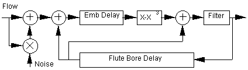
Figure 19.2 A block diagram for Perry Cook's slide flute.
The feed back section of this instrument consists of two delay lines. One delay line models the embouchure air jet and the other models the flute bore. The embouchure delay is optimally equal to one half of the length of the flute bore.
| atemp1 | delayr | 1/ifqc/2 |
| ax | deltapi | afqc/2 |
| delayw | asum2 |
The interaction between the embouchure and the flute bore is modeled by a cubic equation, x-x3.
| ax | delay | asum2, 1/ifqc/2 | ; Embouchure delay |
| apoly | = | ax - ax * ax * ax | ; Cubic equation |
The end of the flute bore reflects low frequencies. This is modeled with a low pass filter at the beginning of the bore delay line. The bore delay is then fed back into the system in two places, before the embouchure delay where it is added to the flow and before the filter where it is added to the output from the cubic equation.
The pitch is changed by changing the length of the bore delay line.
| afqc | = | 1/ifqc-asum1/20000-9/sr+ifqc/12000000 |
In order to be able to tune precisely an interpolating variable delay tap was used to implement the bore delay. The delayr, delayw and deltapi opcodes were used for this.
| atemp2 | delayr | 1/ifqc |
| aflute1 | deltapi | afqc |
| delayw | avalue |
In a real flute pitch varies slightly based on breath pressure. Vibrato can be introduced in this way. To implement this in the waveguide model the delay tap length includes a term based on the pressure.
| atemp | delayr | 1/ifqc |
| aflute1 | deltapi | 1/ifqc-12/sr+asum1/20000 |
| delayw | avalue |
One modification of this instrument could be to make the emboucure delay length a function of pressure to allow for overblowing techniques. This can be tricky because overblowing occurs at a lower pressure for low frequencies. Retuning the flute would also be required.
The next instrument considered is a waveguide clarinet derived from an instrument by Perry Cook. In this instrument a bi-directional delay line is used. A bidirectional delay line consists of two delay lines of the same length whose outputs feed each others inputs. Breath pressure is fed into the system at the input to the forward delay line and at the output of the reflection delay line.
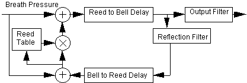
Figure 19.3 A block diagram for a waveguide clarinet.
Another feature used in this instrument is a feedback table. Rather than having constant feedback, feedback is set up in a table referenced by the pressure difference between the input pressure and the reflected wave.
| asum2 | = | -apressm-.95*arefilt-kemboff |
| areedtab | tablei | asum2/4+.34, p9, 1, .5 |
| amult1 | = | asum2*areedtab |
The table can be modified to account for variations in reed stiffness and embouchure.
The bell at the end of a clarinet functions as a filter, low frequencies are reflected back into the bore and high frequencies are allowed to pass out of the bore. This is implemented as a pair of filters. The ouput from the low pass filter feeds the reflection delay line and the output from the high pass filter is scaled and used as the output of the instrument.
This instrument is an attempt to extend the waveguide model to two dimensions. There are two parts to this instrument defined as separate Csound instruments: the drum and the drum stick. The drum can be thought of as a square membrane with waves traveling from each of the four corners to each of the other three corners.
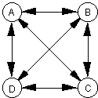
Figure 19.4 A simplified diagram for a waveguide square drum. Each double arrowed line represents a bidirectional delay line.
These waves are represented as bidirectional delay lines in the following code:
| alineab | delay | anodea+gadrum+afiltr, | ilength/ifqc |
| alineba | delay | anodeb+gadrum+afiltr, | ilength/ifqc |
| alinebc | delay | anodeb+gadrum+afiltr, | iwidth/ifqc |
| alinecb | delay | anodec+gadrum+afiltr, | iwidth/ifqc |
| alinecd | delay | anodec+gadrum+afiltr, | ilength/ifqc |
| alinedc | delay | anoded+gadrum+afiltr, | ilength/ifqc |
| alinead | delay | anodea+gadrum+afiltr, | iwidth/ifqc |
| alineda | delay | anoded+gadrum+afiltr, | iwidth/ifqc |
| alineac | delay | anodea+gadrum+afiltr, | idiagnl/ifqc*irt2 |
| alineca | delay | anodec+gadrum+afiltr, | idiagnl/ifqc*irt2 |
| alinebd | delay | anodeb+gadrum+afiltr, | idiagnl/ifqc*irt2 |
| alinedb | delay | anoded+gadrum+afiltr, | idiagnl/ifqc*irt2 |
The membrane can be left on for accumulation of successive impulses and can be turned off to simulate muting. The output from the drum is fed into a delay line meant to simulate the drum body.
| atube | delay | anodea, itube/ifqc |
| afiltr | tone | atube, 1000 |
| afiltr | = | afiltr/ifdbck2 |
The second part of this instrument simulates the drum stick striking the drum. This send an impulse into the drum membrane. The pitch determines the duration of the impulse and along with the filter can be thought of as specifing the type of the drum stick.
This drum can be adjusted to produce a wide variety of percussion sounds. Sounds similar to a bongo, conga, wood blocks, struck glass bottles, bells and others can be produced.
A pitch dependence on amplitude could be introduced to simulate the drum head tightening during an impact. One drawback of this instrument is the large number of delay lines requiring extensive computation. It is possible this system could be simplified substantially. Another problem with this instrument is that the timbre tends to change with pitch. This presents a problem for reproducing marimba like tones.
Waveguide instruments have introduced a new opportunity for expression in electronic musical instruments. Since they are based on physical systems their response to playing dynamics is similar to the response of an acoustic instrument. Programming a waveguide instrument can be tedious. They are difficult to get to start oscillating, and once they do start oscillating they tend to blow up easily. They are also difficult to tune over a wide range of pitches. Creating waveguide insturments is in some ways similar to creating acoustic instruments. They both require careful crafting and meticulous adjustments to produce quality instruments.
This set of instruments is based on systems of differential equations. Systems of differential equations can exhibit a variety of behaviors ranging from increasing without bound to approaching a constant value. Some of these systems, called strange attractors, exhibit chaotic behavior. They follow a path which is repetitive yet non-repeating. These systems can be used to produce unusual and bizarre timbres because of their complex nature.
The Lorenz Attractor, discovered by Edward Lorenz is one of the first chaotic systems to be discovered. It describes the motion of convection currents in a gas or liquid. It is defined by the following set of equations:
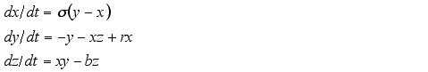 (19.2)
Where
s is the ratio of the fluid viscosity of a substance to its thermal conductivity,
r is the difference in temperature between the top and the bottom of the system,
b is the width to height ratio of the box used.
These equations can be approximated in Csound as follows:
| adx | = | as * (ay-ax) | ; Compute | dx | ||
| ady | = | -ax * az + ar | * ax - ay | ; ... | dy | |
| adz | = | ax * ay - ab | * az | ; ... | and | dz. |
| ax | = | ax + ah * adx | ; Update | x | ||
| ay | = | ay + ah * ady | ; ... | y | ||
| az | = | az + ah * adz | ; ... | and | z. | |
| outs | ax * kampenv, | ay*kampenv | ; Scale | and | output |
The varible h represents the time step and can be used to modify the frequency of the system. Smaller values of h result in a more accurate approximation of the system. As the value of h is increased the approximation becomes less and less accurate until the system becomes unstable when h is somewhat larger than .1. The x and y coordinates are scaled and given as the output for the instrument. Initial values of the coordinates and coefficients are provided in the score.
| ; | Start | Dur | Amp | x | y | z | s | r | b | h |
| i1 | 0 | 8 | 600 | .6 | .6 | .6 | 10 | 28 | 2.667 | .01 |
The values listed are the historic values of the coefficients. This system will produce drastically different results with different initial values of the coordinates and different coefficients.
The Rossler Attractor is a chaotic system defined by the following equations:
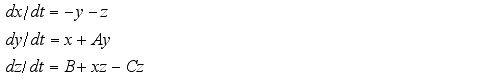 (19.3)
This can be implemented in Csound using the methods described for implementing the Lorenz attractor.
| adx | = | -ay - az | ; Compute | dx | ||
| ady | = | ax + aa * | ay | ; ... | dy | |
| adz | = | ab + ax * | az - ac * az | ; ... | and | dz. |
| ax | = | ax + ah * | adx | ; Update | x | |
| ay | = | ay + ah * | ady | ; ... | y | |
| az | = | az + ah * | adz | ; ... | and | z |
| outs | ax*kampenv, | ay*kampenv | ; Scale | and | output |
This instrument is based on simulating the orbit of a planet in a binary star system. The planet is initialized to some location and the stars are given positions and masses. For each sample the position, velocity and acceleration of the planet is calculated based on the laws of gravity and momentum.
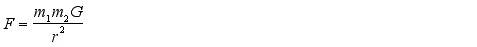(19.4)
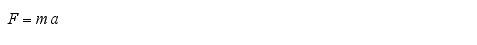(19.5)
Using these equations together produces a formula for acceleration
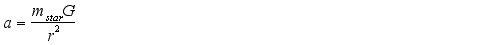 (19.6)
To simplify the equation the mass is expressed in units such that the gravitational constat equals one. For a three dimensional system each dimensional component of acceleration may be calculated separately by multiplying the acceleration by the difference for each dimension divided by the radius as follows:
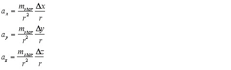 (19.7)
The acceleration due to each star is calculated separately and summed to obtain an overall acceleration. Once the total accelleration has been determined the velocity may be incremented.
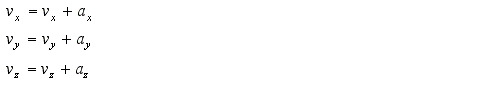 (19.8)
The position is similarly incremented.
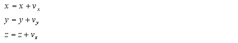 (19.9)
The following Csound instrument implements the system described above.
| kdx | = | is1x-kx |
| kdy | = | is1y-ky |
| kdz | = | islz-kz |
| ksqradius | = | kdx*kdx+kdy*kdy+kdz*kdz+1 |
| kradius | = | sqrt(ksqradius/kradius) |
| kaccel | = | imas1/ksqradius/kradius |
| kax | = | kaccel*kdx |
| kay | = | kaccel*kdy |
| kaz | = | kaccel*kdz |
| kdx | = | is2x-kx |
| kdy | = | is2y-ky |
| kdz | = | is2z-kz |
| ksqradius | = | kdx*kdx+kdy*kdy+kdz*kdz+1 |
| kradius | = | sqrt(ksqradius) |
| kaccel | = | imass2/ksqradius/kradius |
| kax | = | kax+kaccel*kdx |
| kay | = | kay+kaccel*kdy |
| kaz | = | kaz+kaccel*kdz |
| kvx | = | kvx+ih*kax |
| kvy | = | kvy+ih*kay |
| kvz | = | kvz+ih*kaz |
| kx | = | kx+ih*kvx |
| ky | = | ky+ih*kvy |
| kz | = | kz+ih*kvz |
| outs | kx*kampenv, ky*kampenv |
Note that the one is added to the radius squared to stabilize the system by avoiding division by zero during a close approach between a planet and a star. If computation of an actual star system is desired the gravitational constant should be included. The one added to the radius squared term should also be omitted.
One modification could be to add more stars to the system. It is diffucult to find a system which remains stable over a long period of time. Eventually a close encounter with a star accelerates the planet to escape velocity from the system.
There seems to be a great deal of room for exploration in this area. There is at least one site on the internet which lists over 40,000 different dynamical systems many of which are useful as tone generators. These systems also work well at low frequencies for modulating pitch, amplitude and panning. At low amplitudes they can be used to introduce subtle complex modulations to otherwise sterile sounds.
Lomen, D., and Mark J. Differential Eqaitions. Englewood Cliffs, N.J.: Prentice-Hall, 1988. 402-411.
Gerald, C. Applied Numerical Analysis, Second Edition. Addison-Wesley Publishing Company, Inc. 1980. 435-459
Smith, J. O. III. "Physical Modeling using Digital Waveguides." Computer Music Journal, Vol. 16, No. 4, Winter 1992. 74-91.
Karplus, K. and Strong, A. "Digital Synthesis of Plucked-String and Drum Timbres." Computer Music Journal, Vol. 7, No. 2, Summer 1983.
Cook, P. "Integration of Physical Modeling for Synthesis and Animation." International Computer Music Conference. Banff. 1995
Cook, P. "A Meta-Wind-Instrument Physcal Model, and a Meta-Controller for Real Time Performance Control." International Computer Music Conference. Banff. 1995.
Pickover, C. Computers and the Imagination. St. Martin's Press, Inc. New York, NY, 1991. 123-125.
Gleick, J. Chaos. Viking Penguin Inc. New York. 1987. 141-142.
Dewdney, A.,The Armchair Universe. W. H. Freeman and Company. New York, 1988. 229-238.